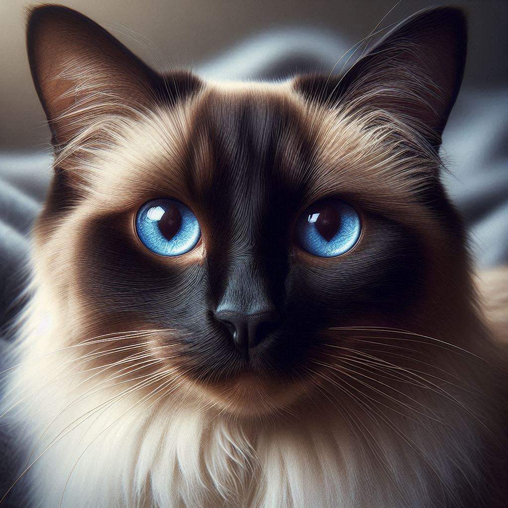
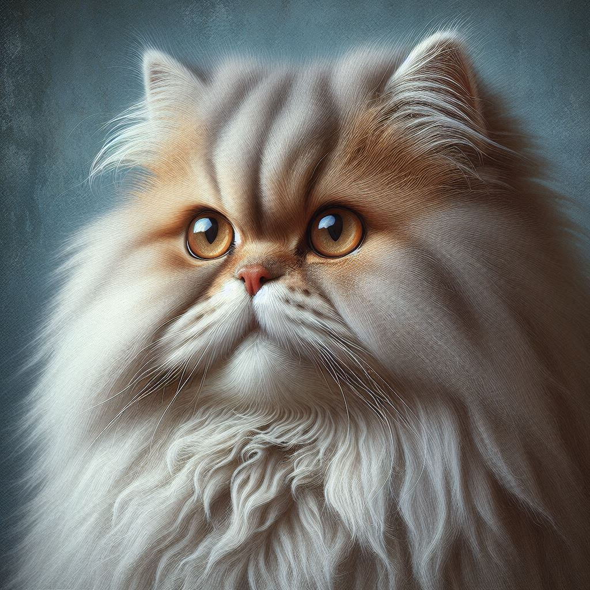
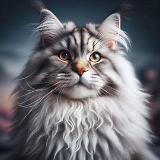
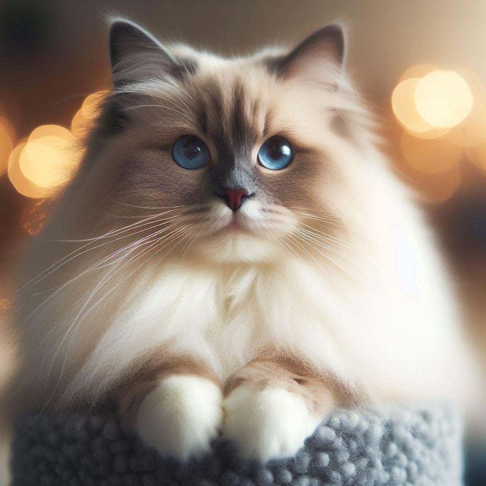
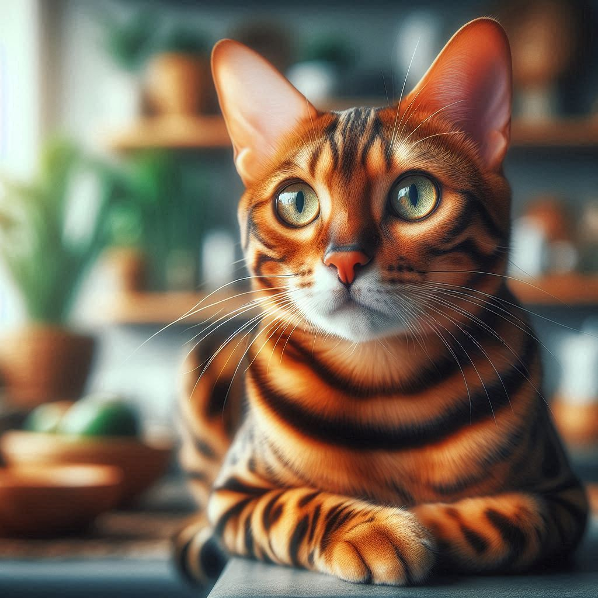
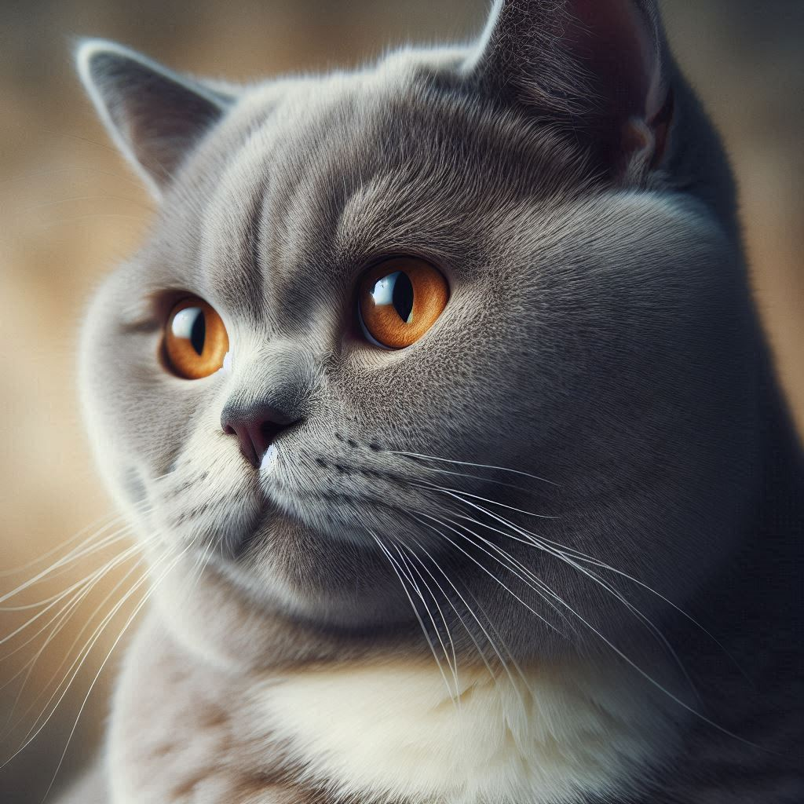
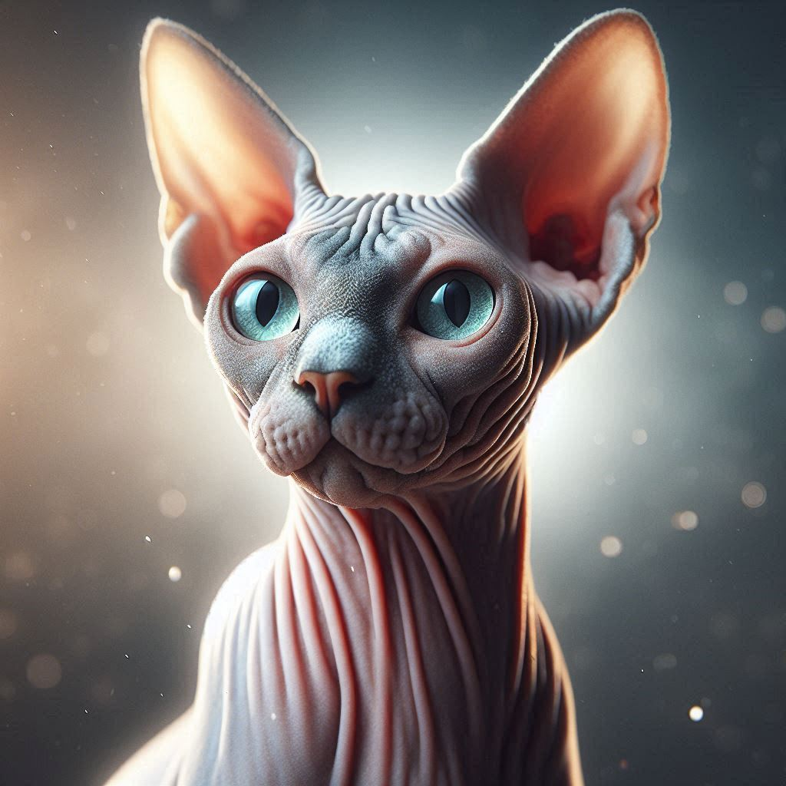
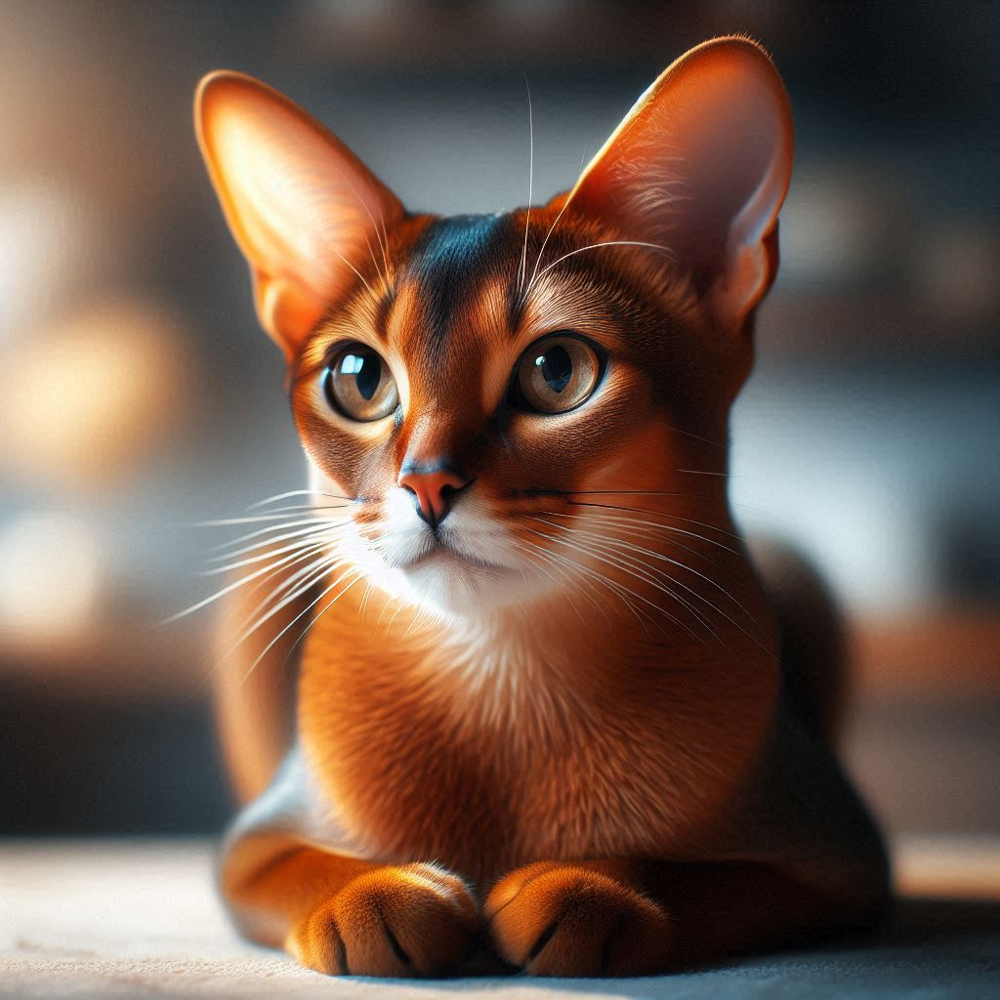

Cats and Kittens 🐈

Cats are fascinating creatures known for their independent yet affectionate nature. Their playful antics and soothing purrs make them beloved companions. Cats form strong bonds with humans, providing emotional support and reducing stress. Interacting with cats can increase levels of oxytocin, the “love hormone,” enhancing feelings of happiness and bonding. Studies have shown that having a cat can alleviate symptoms of anxiety and depression, promoting overall mental well-being2. Whether you’re a cat owner or an admirer, these furry friends bring joy and comfort to our lives.
Some widely known cats:
Here is the list of some common yet famous types of cats worldwide.
Siamese:
Known for their striking blue eyes and sleek short coat, Siamese cats are very vocal and affectionate. They originated in Thailand and have been popular since the 19th century.
Persian:
These cats have long, luxurious fur and a distinctive flat face. They are known for their calm and gentle nature but require regular grooming.
Maine Coon:
One of the largest domestic cat breeds, Maine Coons are friendly and sociable. They have a thick, water-repellent coat and tufted ears.
Ragdoll:
Named for their tendancy to go limp when picked up, Ragdolls are large, affectionate cats with striking blue eyes and semi long fur.
Bengal:
These cats have a wild appearance with their spotted or marbled coat. They are energetic and love to play.
British Shorthair:
Known for their round face and dense plush coar, British Shoryhairs are easygoing and make great companions.
Sphynx:
Famous for their lack of fur, Sphynx cats are known for their wrinkled skin and large ears. They're very affectionate and love attention.
Abyssinian:
These cats have a short, ticked coat and are very active and playful. They are one of the oldest known cat breeds.
Things cats Love:
Cats can have interesting and sometimes quirky prefrences! Here are some weird things cats commonly love.
Commonly loved things:
Sleeping:
Cats love to sleep and can spend up to 16 hours a day napping.
Scratching:
Scratching posts or furniture helps them keep their claws sharp and mark their territory.
Playing
Toys like feather wands, laser pointers, and balls are favorites.
Grooming:
Cats spend a lot of time grooming themselves to stay clean and regulate their body temperature.
Hunting:
Even indoor cats have a strong hunting instinct and enjoy chasing toys that mimic prey.
Weird things they love:
- The smell of Bananas and other strong odors.
- They love running water and most of the cats prefer drinking from running water sources.
- The sound and texture of crinkly paper and plastic bags can be irresistiblt to cats.
- Cats love to hide and play in cardboard boxes, which provide a sense of security and fun.
- Cats enjoy climbing and perching in high places where they can observe their surroundings,